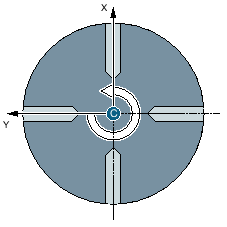
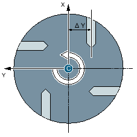
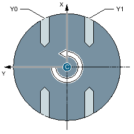

Mit der Funktion "Beliebige Positionen" programmieren Sie beliebige Positionen, rechtwinklig bzw. polar vermaßt. Die einzelnen Positionen werden in der programmierten Reihenfolge angefahren.
Mit dem Softkey "Alle löschen" werden alle programmierten X/Y-Positionen gelöscht.
Sie programmieren in ZC, wenn die Y-Achse während der Bearbeitung nicht verfahren werden soll.
Wenn die Bohrungen auf den Mittelpunkt des "Zylinders" zeigen sollen, müssen Sie die Y-Achse vorher mittig über dem "Zylinder" positionieren.
Y-Achse steht mittig über dem Zylinder
Y-Achse steht nicht mittig über dem Zylinder
Sie programmieren in YZC, wenn die Y-Achse mit verfahren werden soll. Für jede Position kann ein Wert angegeben werden Zusätzlich zu den Möglichkeiten mit ZC kann z. B. noch folgendes realisiert werden.
Y-Achse wird verfahren (Y0, Y1)
Siehe auch:
Beliebige Positionen - CYCLE802
Aufruf des Zyklus - CYCLE802
An-/Abfahren